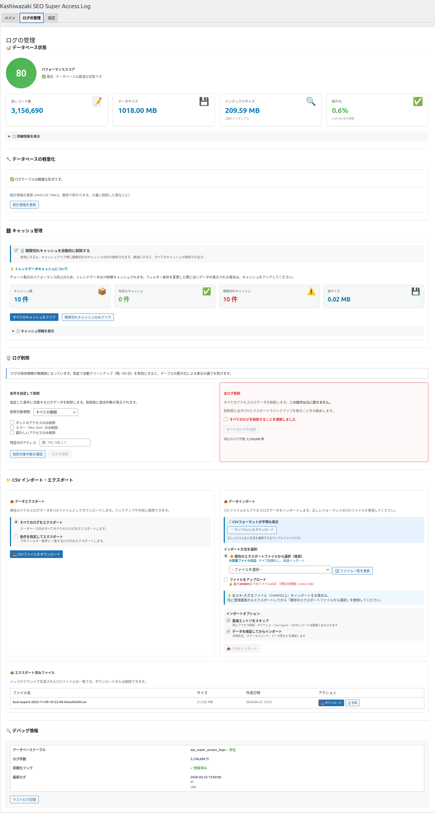
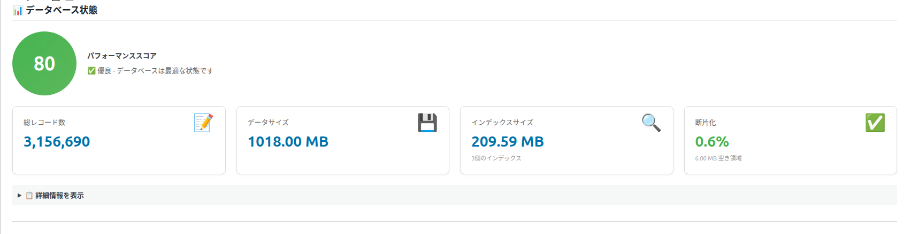
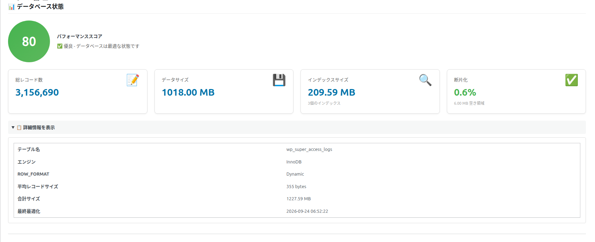
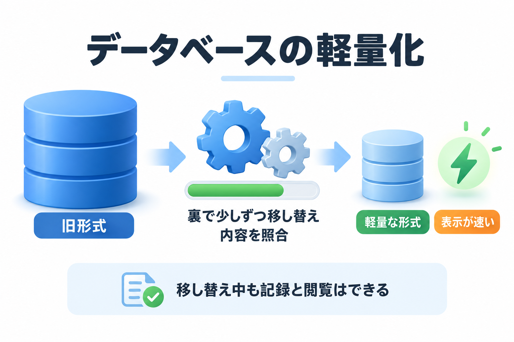
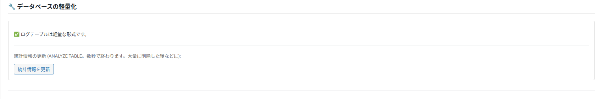
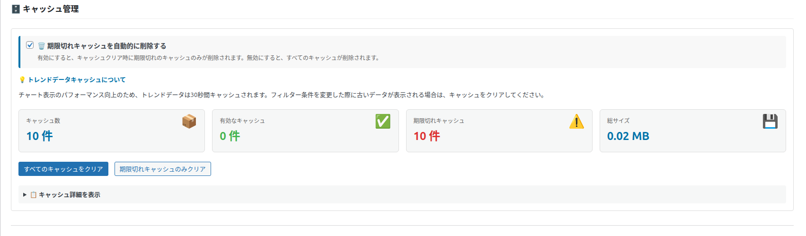
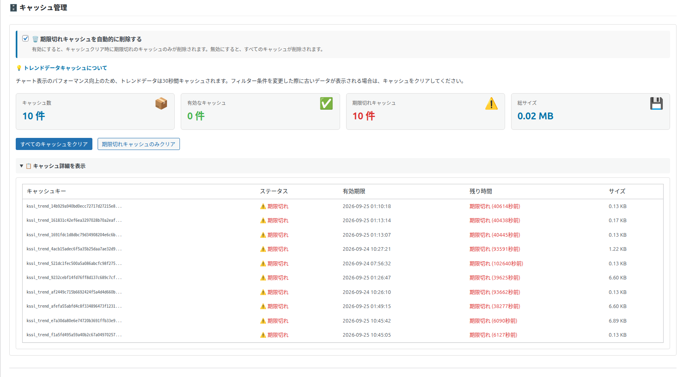
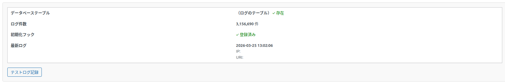

データベースとキャッシュ
「ログの管理」タブの前半です。データベースの状態の確認、軽量化（新しい保存形式への移し替え）、キャッシュの管理、デバッグ情報を説明します。

📊 データベース状態

| 表示 | 意味 |
|---|---|
| パフォーマンススコア | ログを保存しているデータベースの状態を 100 点満点で表したものです。80 点以上は緑「✅ 優良 - データベースは最適な状態です」、60 点以上は黄「⚠️ 注意 - 最適化を推奨します」、それ未満は赤「❌ 要改善 - 今すぐ最適化してください」。 |
| 総レコード数 | 保存しているログの件数です。 |
| データサイズ | ログが使っている容量です。 |
| インデックスサイズ | 検索を速くするための索引が使っている容量と、索引の数です。 |
| 断片化 | 削除などで生じた空き領域の割合です。20% を超えると赤く表示されます。 |
スコアの計算
100 点から、次の分を引いて計算します。
| 条件 | 減点 |
|---|---|
| 断片化が 30% 超 / 20% 超 / 10% 超 | −30 / −20 / −10 |
| 索引（インデックス）が 10 個未満 | −20 |
| 1 件あたりの大きさが 1KB 超 | −10 |
| 「統計情報を更新」から 60 日超 / 30 日超 / 一度も実行していない | −15 / −10 / −15 |
1.0.1 の軽量な保存形式は、必要な索引だけに絞っているため、索引は 3 個です。そのためスコアは常に 20 点引かれ（最高 80 点）、「🔍 インデックスが不足しています」のお知らせが出続けます。これは軽量化によるもので、問題ではありません。「統計情報を更新」を押しても索引は増えません。
その他のお知らせ
| お知らせ | 意味と対処 |
|---|---|
| ⚠️ 高レベルの断片化を検出 / ⚠️ 中レベルの断片化を検出 | 空き領域が 20% / 10% を超えています。大量に削除した後に出やすく、ふだんの動作には大きな影響はありません。 |
| 💾 データベース容量が大きくなっています | ログの容量が 1000MB を超えています。自動クリーンアップや削除で、古いログを減らすことを検討してください。 |
| ⏰ 最適化が実行されていません / ⏰ 最適化から時間が経過しています | 「統計情報を更新」を一度も実行していない、または 60 日以上経っています。 |
📋 詳細情報を表示

次の項目を表示します。困ったときに、サーバーの管理者へ状態を伝えるのに使います。
| 項目 | 内容 |
|---|---|
| テーブル名 | ログを保存している場所の名前 |
| エンジン / ROW_FORMAT | データベースの保存の方式 |
| 平均レコードサイズ | ログ 1 件あたりの平均の大きさ |
| 合計サイズ | ログと索引の容量の合計 |
| 最終最適化 | 最後に「統計情報を更新」した日時。記録がなければ「不明」 |
🔧 データベースの軽量化


1.0.1 では、ログの保存形式を軽量にしました。以前のバージョンから更新したサイトでは、ここで状態を確かめ、移し替えを始めます。表示は状態によって変わります。
| 表示 | 状態とすること |
|---|---|
| ✅ ログテーブルは軽量な形式です。 | 移し替えが済んでいます。何もする必要はありません。 |
| ログテーブルは旧形式です (約 N 行 / M MB)。… | 以前の形式のままです。「軽量化の移行を開始する」を押すと移し替えを始めます。ログが約 20 万件より少なければ、管理画面を開いたときに自動で始まります。 |
| ⏳ 軽量化の移行: コピー中（N%）/ 照合中（N%） | 移し替えの途中です。記録と閲覧はそのまま使えます。進み具合はページを開き直すと更新されます（自動では更新されません）。 |
| ⏳ 疑わしいアクセスの判定を更新中です (完了までは従来の方法で絞り込みます)。 | 移し替えの仕上げや、疑わしいキーワードの変更の後に、すでにあるログの判定をやり直しています。 |
| 前回の移行は失敗しました: …（データは旧テーブルのまま使えます） | 移し替えを始められませんでした。データは以前の形式のまま使えます。時間をおいて、もう一度「軽量化の移行を開始する」を押してください。 |
| 照合で不一致があったため、旧テーブルを残しています: … | 移し替えた内容の照合で違いが見つかったため、以前のデータを消さずに残しています。「移行を再開する」を押すと、照合と修復をやり直します。 |
- 移し替えは裏で少しずつ進みます。完了までの時間は、ログの件数とサーバーの性能によります。
- 移し替えの間は、元のデータと同じくらいのデータベースの容量を一時的に使います。
- 移し替えの間は、ログの削除・CSV のインポート・自動クリーンアップ・疑わしいキーワードの変更ができません。
- 「移行を再開する」は、照合で違いが見つかったとき、または 10 分以上進んでいないときだけ表示されます。
- 「軽量化の移行を開始する」「移行を再開する」を押しても、結果のメッセージは出ません。ページが開き直され、進み具合の表示に変われば始まっています。
統計情報を更新
「統計情報の更新 (ANALYZE TABLE。数秒で終わります。大量に削除した後などに):」の下のボタンです。データベースが検索のしかたを決めるための情報を最新にします。大量に削除した後に押すと、表示が速くなることがあります。
「統計情報を更新」を押します（確認はありません）。
裏で処理が始まり、「バックグラウンド処理を開始しました - データベースを最適化しています...」「バックグラウンド処理実行中: … 進行状況: N%」と進み具合が表示されます。このページを開いたまま待ちます。
「✓ 最適化完了! 統計情報を更新しました」とレコード数・テーブルサイズ・インデックス数が表示され、ページが開き直されます。
処理中・失敗後は、ボタンの文字が「最適化中…」「今すぐデータベースを最適化」に変わりますが、行う処理は同じ（統計情報の更新）です。サイトの定期処理（WP-Cron）が止まっているサーバーでは、待ち状態のまま終わらないことがあります。
🗄️ キャッシュ管理

アクセスの推移グラフは、表示を速くするため、一度作ったデータを一時的に保存（キャッシュ）しています。ここでは、そのキャッシュの数を確かめたり、消したりできます。
| 表示・操作 | 内容 |
|---|---|
| キャッシュ数 / 有効なキャッシュ / 期限切れキャッシュ / 総サイズ | アクセスの推移グラフのキャッシュの件数と容量です。 |
| すべてのキャッシュをクリア | 推移グラフのキャッシュをすべて消します。「すべてのトレンドデータキャッシュをクリアします。よろしいですか？」と確認され、「✓ クリア完了!」の後にページが開き直されます。 |
| 期限切れキャッシュのみクリア | 期限の切れたキャッシュだけを消します（確認はありません）。 |
| ⚠️ 期限切れキャッシュが残っています | 期限の切れたキャッシュが 1 件以上あるときに出ます。期限切れのキャッシュは使われないので、表示には影響しません。 |
| 📋 キャッシュ詳細を表示 | キャッシュごとの「キャッシュキー」（見分けるための名前）・「ステータス」（⚠️ 期限切れ / ✅ 有効）・「有効期限」・「残り時間」・「サイズ」の一覧が開きます（キャッシュが 1 件以上あるときだけ）。 |

画面の説明では「トレンドデータは30秒間キャッシュされます」となっていますが、実際には最大 10 分間保存します。ログの削除・インポート・設定の保存をすると、キャッシュは自動で使われなくなるので、ふだんクリアする必要はありません。また、「🗑️ 期限切れキャッシュを自動的に削除する」のチェック（切り替えると「期限切れキャッシュの自動削除を有効にしました」などと表示）は保存されますが、現在のバージョンでは 2 つのボタンの動作は変わりません。
🔍 デバッグ情報

| 表示・操作 | 内容 |
|---|---|
| データベーステーブル | ログの保存先があれば「✓ 存在」、なければ「✗ 不存在」です。 |
| ログ件数 | 保存しているログの件数です。 |
| 初期化フック | アクセスを記録するしくみが動いていれば「✓ 登録済み」です。 |
| 最新ログ | いちばん新しいログの日時（世界標準時）、IP アドレス、ページです。ログがなければ「ログが見つかりません」。 |
| テストログ記録 | 試しにログを 1 件記録して、記録のしくみが動くかを確かめます。成功すると「✓ 成功！ Test log successfully recorded!」と記録の ID と日時が表示されます。 |
テストログは本物のログとして 1 件追加され、一覧や合計に混ざります（User-Agent が「Test User Agent (KSSL Test Log #…)」、ソースが Static、IP アドレスは操作している人のもの）。確かめた後、不要なら IP アドレスを指定した削除などで消してください。操作している人の IP アドレスがサーバーと同じ場合や、除外の設定に当てはまる場合は、記録に失敗します。